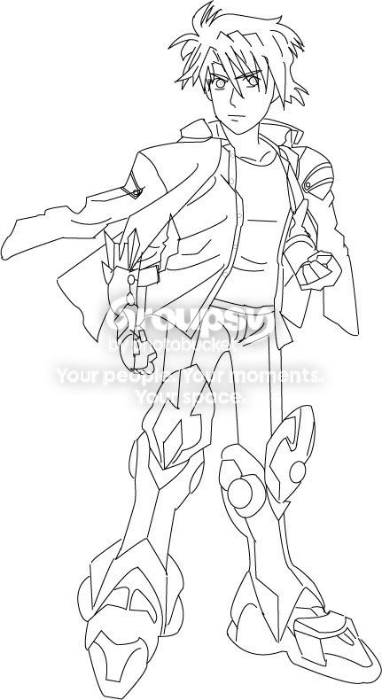
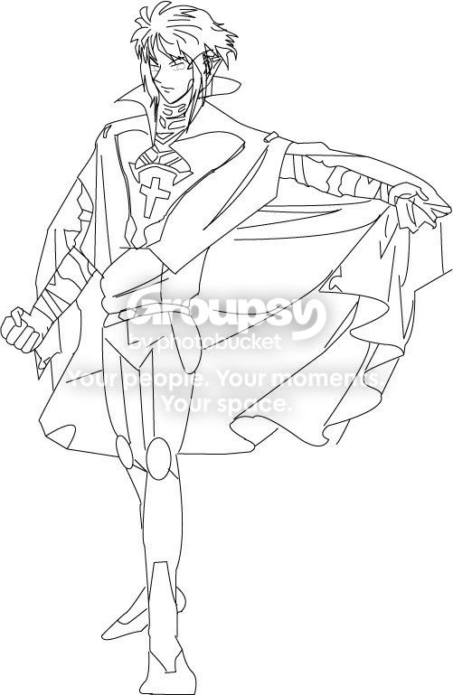

หน้า 159 จากทั้งหมด 166
Re: The Wonderful World : `Rise of Silver - Heart`[ ลงปฐมบท

โพสต์แล้ว:
พฤหัสฯ. 25 พ.ย. 2010 11:49 amโดย ECO
ไม่มีก็สมัครใหม่เลยสิครับ
Re: The Wonderful World : `Rise of Silver - Heart`[ ลงปฐมบท
โพสต์แล้ว:
พฤหัสฯ. 25 พ.ย. 2010 11:55 amโดย ECO
ยุให้คนตีกันรึเปล่าเนี่ยครับผม (ล้อเล่นน่า ทรัพย์สินทางปัญญาของผมเชียวนะ)
แต่ว่านะ มาเช็คแล้ว ปรากฏว่าเวปเก่าที่ผมลงไว้ มันปิดตัวไป แล้วทำเวปใหม่ไปแล้วน่ะครับ ดังนั้น ตอนนี้ ที่เหลือค้างในอินเตอร์เนต จะมีก็แต่ใน Dek-D ที่เขาก๊อปปี้ไปเท่านั้น่ะครับ
และที่ลงไปแล้วในเวปต้นฉบับ มันก็ไม่ใช่น้อยๆ เลย เพราะลงไปแล้ว 40 กว่าตอน หายเรียบ...
ยังดีที่ไฟล์ Word ต้นฉบับยังคงอยู่หมดทั้ง 40 กว่าตอน รวมกับตอนแต่งไว้ แต่ยังไม่ลง (เพราะหมดไฟ) เป็น 50 กว่าตอน
แต่ถึงสมัครไอดีใหม่แล้ว เขาก็อ้างได้อยู่ดีนี่ครับว่ามาตู่เอา เพราะเราสมัครมาทีหลังอ่ะครับ?? หรือว่าอย่างไรครับผม?
Re: The Wonderful World : `Rise of Silver - Heart`[ ลงปฐมบท
โพสต์แล้ว:
พฤหัสฯ. 25 พ.ย. 2010 11:59 amโดย ECO
ไฟล์เวิร์ดเรานั่นแหละตัวยืนยันจ้า ^_^ ยังไงซะเราก้มีทั้งหมด ต่อให้อีกฝ่ายเถียงมา ก็มาลองวัดแต่งต่อกันเลยดีกว่า :P
ไม่มีทางจะแต่งต่อได้แน่นอนร้อก ~
สงสัยคนทำคงเป็นยัยเด็กติ่งหูที่ไม่มีปัญญาจะแต่งเลยต้องมาใช้วิธีก๊อปเอาแบบนี้น่ะสิ ... แต่ของเจ๊โดนก๊อปไปแค่ปฐมบทแฮะ :P
Re: The Wonderful World : `Rise of Silver - Heart`[ ลงปฐมบท
โพสต์แล้ว:
พฤหัสฯ. 25 พ.ย. 2010 12:24 pmโดย ECO
เจอละ
ไม่ต้องสมัครไอดีก็ได้ครับ แค่มี E-mail ติดต่อกลับก็พอ แล้วกดแจ้งแบนบทความ พร้อมเหตุผลไปด้วยครับผม (ยังไม่ต้องแนบไฟล์ เพราะไม่มีให้แนบครับ)
มันอยู่กรอบเล็กๆ ข้างล่างบทความน่ะครับ ปุ่มแจ้งแบน
ผมจะกดส่งแล้วละครับผม (ของนิยายผมนะ) ของเจ๊ก็เอาเลยครับผม
Re: The Wonderful World : `Rise of Silver - Heart`[ ลงปฐมบท
โพสต์แล้ว:
พฤหัสฯ. 25 พ.ย. 2010 5:08 pmโดย ECO
กรรม มันไปอยู่ในนั้นได้เช่นไร
ดูจากอายุในเด็กดีแล้วเพิ่งเล่นไม่นาน
สามารถตามไปได้นะนิ =="
++++++++++++++++++++++++++++++++
Ps. ผมก็จิ้มกดแบนได้งับ เกือบกดเพื่อนอยู่บ่อยๆในนั้น แต่อันนี้มันข้ามเว็ปไม่รู้จะได้หรือเปล่า
ps2. เพิ่งสังเกตเห็น ตั้งแต่ พ.ค แล้วนี่นา *-*
Re: The Wonderful World : `Rise of Silver - Heart`[ ลงปฐมบท
โพสต์แล้ว:
ศุกร์ 26 พ.ย. 2010 9:35 pmโดย ECO
แอบแปะรูป หัดทำดีกว่า ทำไว้นานแล้ว


Re: The Wonderful World : `Rise of Silver - Heart`[ ลงปฐมบท
โพสต์แล้ว:
เสาร์ 27 พ.ย. 2010 7:11 amโดย ECO
โอ้ว ครบ 3 ปีแล้วเหรอเนี่ย *0*
/me เข้ามาอ่านต่อแล้วจากไป
Re: The Wonderful World : `Rise of Silver - Heart`[ ลงปฐมบท
โพสต์แล้ว:
เสาร์ 27 พ.ย. 2010 7:40 pmโดย ECO
เกียร์วาดรูปสวยเหมือนกันนะเนี่ย ตัวแรกใช้ฟอลหรือเปล่า? ... ตัวที่สองไม่รู้ (ฮา)
Re: The Wonderful World : `Rise of Silver - Heart`[ ลงปฐมบท
โพสต์แล้ว:
อาทิตย์ 28 พ.ย. 2010 12:44 amโดย ECO
จะว่าไงดีล่ะ ไม่ได้วาดหรอกนะ ใช้คอมทำเพียวๆ เลย
รูปก็ ไม่ได้เริ่มจากโครงจริงๆหรอก เอาแบบมาแล้วก็ลอกลาย แล้วก็ใส่รายละเอียดลงไป ว่าง่ายๆก็ดราฟรูปนั่นแหละ
มันก็เลยดูดีหน่อย
ตัวแรก ถูกต้องแล้ว ส่วนตัวที่ 2 ลองทายดูอีกทีสิ
Re: The Wonderful World : `Rise of Silver - Heart`[ ลงปฐมบท
โพสต์แล้ว:
จันทร์ 29 พ.ย. 2010 12:05 pmโดย ECO
ตัวที่2... อาซาคิมนี่หว่า

ยังไม่ได้วาดเจ้าเกซเพลเลยแฮะ มัวแต่ติดSRW Lอยู่
Re: The Wonderful World : `Rise of Silver - Heart`[ ลงปฐมบท
โพสต์แล้ว:
พุธ 01 ธ.ค. 2010 12:17 pmโดย ECO
ตอนใหม่จะมาเมื่อไหร่กันน่อ
อดีตกำลังจะจบ
Re: The Wonderful World : `Rise of Silver - Heart`[ ลงปฐมบท
โพสต์แล้ว:
ศุกร์ 03 ธ.ค. 2010 8:04 pmโดย ECO
อีกราวสิบตอนก็จบภาคอดีตแล้วล่ะ :P
เอ้า หลายคนพอจะเดาเนื้อเรื่องได้บ้างยัง!
Re: The Wonderful World : `Rise of Silver - Heart`[ ลงปฐมบท
โพสต์แล้ว:
ศุกร์ 03 ธ.ค. 2010 11:52 pmโดย ECO
ถ้าสิบตอนถึงจบภาคอดีตล่ะก็...
8 ตอนต้องเป็นการบู๊สะบั้นหั่นแหลกก่อน อีก 2 ตอนค่อยรวบรัดตัดจบ แบบ Dragonball Z สินะครับ (กว่าจะง้างท่าก็หนึ่งตอน ปล่อยพลังก็อีก 1 ตอน เอวัง...)
คงไม่ใช่สินะ...

ถ้าให้ผมเดาก็คือ วิลทำตัวเป็นพระเอกปราบเหล่าผู้กล้า และอัศวินทรยศทั้งหมดทิ้งไป แล้วสถาปณาตัวเองขึ้นเป็นพระราชา?...
ใช่รึเปล่าหว่า?...
Re: The Wonderful World : `Rise of Silver - Heart`[ ลงปฐมบท
โพสต์แล้ว:
เสาร์ 04 ธ.ค. 2010 9:19 amโดย ECO

หนทางยังอีกยาวไกล
Re: The Wonderful World : `Rise of Silver - Heart`[ ลงปฐมบท
โพสต์แล้ว:
จันทร์ 06 ธ.ค. 2010 1:41 pmโดย ECO
อีกตั้งหลายสิบตอน แล้วภาคปัจจุบันล่ะ ท่าทางจะได้อยู่กันไปอีกนาน